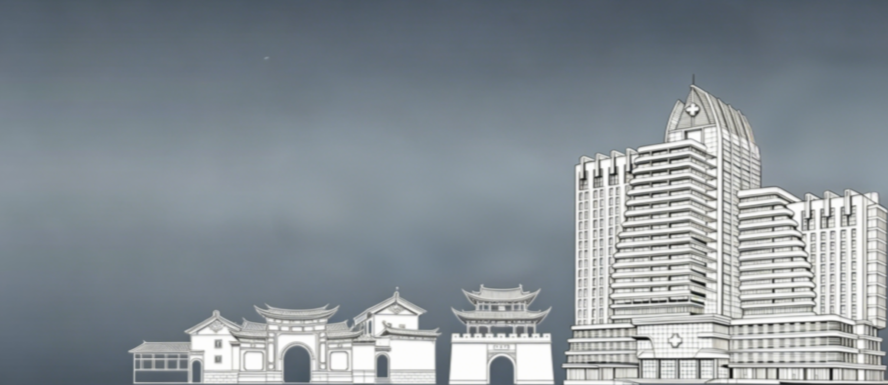

省科技进步奖、省级教学成果一等奖、102项专利、三级甲等综合医院——用证书与数字铭刻大附院年辉煌成就。
每一份荣誉，都是奋斗的见证
2015年，医院通过国家三级甲等综合医院评审，正式跻身全国高水平医院行列。这是对医院综合实力的国家级认可，更是三十余年坚守品质、追求卓越的里程碑式成果。
医院累计获得云南省科技进步奖等科技奖项多项，获专利授权102项。省级教学成果一等奖更是对医院"医教协同"发展模式的权威肯定。
9个"十四五"省级重点专科立项建设，标志着医院学科建设进入加速发展新阶段，学科集群效应逐步显现。
数字铭刻奋斗历程
国家级、省部级重要荣誉资质
2015年
国家级
多项
省级
省级双中心
省卫健委认定